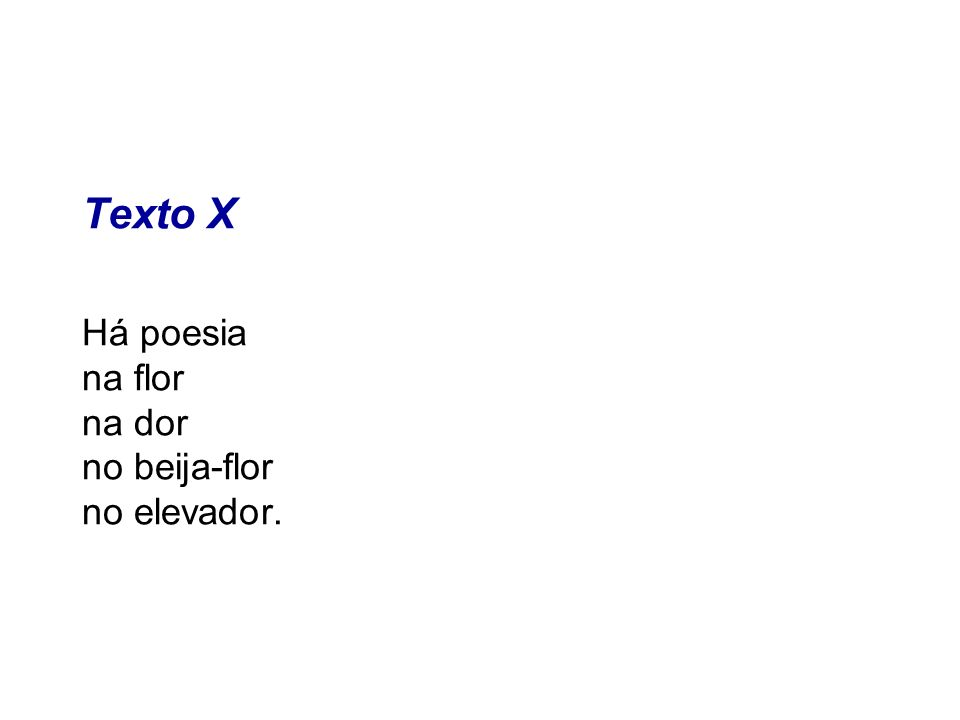

A poesia e uma manifestação artistica,ou seja,e aquilo tudo que faz a gente sentir alguma coisa,
que produz algum tipo de emoção na gente como alegria,tristeza,medo,amor etc...
A poesia esta nas pequenas coisas,nos minimos detalhes,em um dia ensolarado em um jantar com a
familia em reencontrar uma amiga,tomar um café,andar de mãos dadas com alguem especial
poesia e viver
A poesia pode estar em tudo,em uma imagem paisagem objeto tanto que um poema pode ser tambem
chamado de poesia,mas uma poesia não é um poema,ou seja,um poema nada mais é do que uma
poesia que foi colocada em palavras. E como diz o poeta mexicano otavio paz
"há poesia sem poema; paisagens, pessoas e fatos muitas vezes sao
poéticos: sâo poesias sem serem poemas"
uma poesia
um menino perguntou pro tempo
"quanto tempo o tempo tem?"
o tempo respondeu pro menino que
o tempo tem pouco tempo e que ele não sabia
quanto tempo o tempo tem
que não vale apena desperdiçar
o pouco tempo que o tempo tem
que o tempo pode se esgotar amanhã
e tudo terminara
que não vale apena ficar cultivando
distâncias,maldade e desamor
pois se o tempo tem pouco tempo nãp vale
apena gastar o tempo longe do que faz bem,
o tempo tem pouco tempo
mais tem todo o tempo
que o tempo precisa ter
a poesia em tudo.
